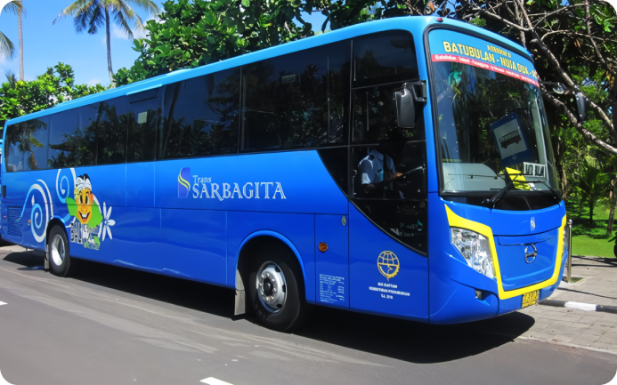

Bus Trans Metro Dewata

Bus Trans Dewata Resmi beroperasi sekitar akhir tahun 2020 dan per tahun 2024 sudah terdapat sebanyak 5 koridor yang beroperasi. Sistem pembayaran bust Trans Metro Dewata saat ini sudah menggunakan QRIS dan kartu uang elektronik seperti e-toll, e-Money, Brizzi, BCA Flash, dan sejenisnya.
 @transmetrodewata
@transmetrodewata
Daftar Koridor dan Rute
- Koridor 1 (K1B) ➝ Sentral Parkir Kuta ke Kabupaten Tabanan (PP), transit di terminal Ubung.
- Koridor 2 (K2B) ➝ Terminal Ubung ke Bandara I Gusti Ngurah Rai (PP).
- Koridor 3 (K3B) ➝ Terminal Ubung ke Pantai Matahari Terbit Sanur, melewati Denpasar Timur & Gatot Subroto.
- Koridor 4 (K4B) ➝ GOR I Gusti Ngurah Rai ke Monkey Forest Ubud.
- Koridor 5 (K5B) ➝ Sentral Parkir Kuta ke Kampus Poltek Negeri Bali (PP).
Bus Sarbagita

Trans Sarbagita adalah layanan transportasi umum berupa Bus Rapid Transit (BRT) di Denpasar yang mulai beroperasi pada 18 Agustus 2011, dengan tujuan untuk menghidupkan kembali sistem angkutan umum di Bali.
@trans_sarbagita
Daftar Koridor dan Rute
- Koridor 1 ➝ Kota (GOR Ngurah Rai) ke GWK (PP), pelajar gratis, umum Rp 3.500.
- Koridor 2 ➝ Kota (GOR Ngurah Rai) ke ITDC Nusa Dua (PP), pelajar gratis, umum Rp 3.500.